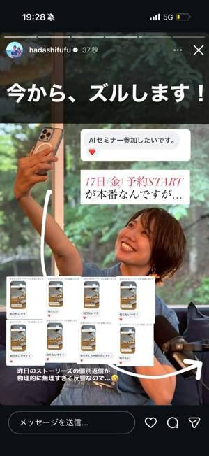
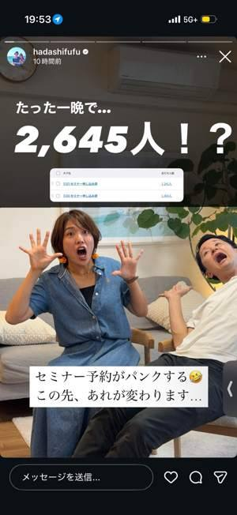
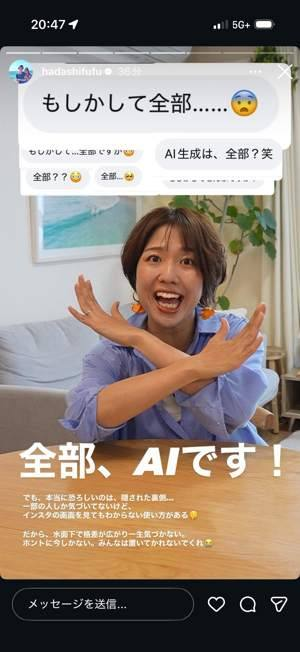
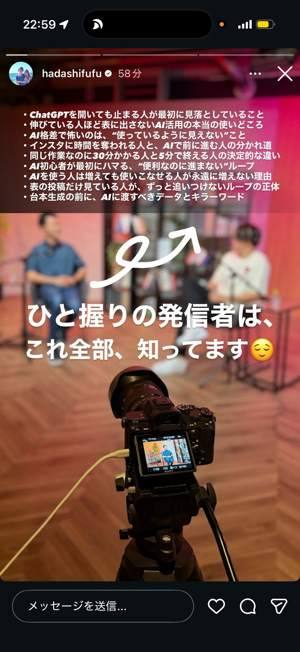

共通デザイン
1080×1920。太いゴシック。ナレーションは写真に直接、引用は白い帯。赤・ピンクの強調は一点。上・下180px、左右70pxを目安に余白。顔・体・操作領域に重ねない。
最新インスタの運用で、いま何を見て、何を変えるか。
直近の実例・失敗・現場のAI活用を、実物で見せる6時間へ。
15日はライブを出さず、成果の裏側にある「何をAIに渡したのか」を残す。16日は実際の反響と小さな答えを出してから、18日のライブへ。17日は実演の予告と時間割で、見る時間を決めてもらう。
はだし夫婦の実物で見られた「反響の集合→一つの質問→一部公開→次の疑問」を採用。検証前の設計案であり、最適枚数や参加率の上昇を実証したものではありません。
原稿初期版TXT： 15日・6枚 ／ 16日・7枚 ／ 17日・6枚 ／ 18日・4枚（編集内容は上の制作パックへ）
写真はさき本人の背景候補。斜線の枠は実績・DM・AI画面の差し替え位置です。各カードで「制作詳細」を開くと、文面・素材・配置・条件を確認できます。




保存91画像を視覚確認。画像番号は管理番号で、投稿日順ではありません。H41/43・H42/44・H50/52など同内容を含みます。全小字の完全転記や、元投稿・参加人数の独立検証はしていません。三崎優太・かずは共通ナレッジの記録から「特定日時への集約」「一つ答えて次の疑問へ」を抽象化しています。
1080×1920。太いゴシック。ナレーションは写真に直接、引用は白い帯。赤・ピンクの強調は一点。上・下180px、左右70pxを目安に余白。顔・体・操作領域に重ねない。
掲載できる実績1〜3件／同じ案件のAI入力と出力／本物の返信・参加表明／失敗の実例／当日の確定時間割／視聴導線。数字・原文・対象・期間を実物と照合する。
［ ］は未確定の差し替え部分。埋められない実績や証言は載せず、同カードの代替案へ。最新の公式変更と、直近の運用観察は分けて表記する。
実績で離脱→1件を大きく。AI画面で離脱→1工程に絞る。反応はあるが移動しない→時間割・視聴URLを明示。登録後の視聴が弱い→時間選択と直前案内を強める。
実在する個人への取材ではなく、参加を止める理由で分けた仮説です。
同一作成者による定性的な仮想レビューです。実在の10人へのテスト・参加率の予測・実配信の結果ではありません。
| N1 | 1巡目：止まる理由 | 2巡目：変えた所 | 3巡目：参加までの条件 |
|---|
必要な素材・使用枚・切り出し方・足りない場合の代替をまとめています。未選定の素材を取得済みにはしていません。
素材依頼票の原本TXTカレンダーは10/18 12〜18時（日本時間）・開始15分前の通知設定を含むファイルです。保存だけで登録はされません。登録画面で確認してください。テーマ別の時刻とYouTube URLは運営の確定が必要です。
同じ経過時間・同じセッションで観測。空欄は未入力。数値はこの端末のブラウザに保存され、公開サイトへ送信されません。
到達・タップの定義を照合してください。同じ人を識別できないため、この数値から「ストーリー経由のライブ参加率」は計算しません。